리눅스마스터-2급 (2013-03-12 기출문제)
1과목: 리눅스 운영 및 관리
1. 다음 중 파일속성에 대한 문자와 의미에 대한 설명으로 틀린 것은?
- c : 문자특수 파일
- d : 디렉터리 파일
- b : 배치 파일
- l : 기호링크
(정답률: 64%)

2. 다음 중 새로 만들어지는 파일 또는 디렉토리에 대해서 권한을 제한하는 명령으로 알맞은 것은?
- chown
- chsh
- chgrp
- umask
(정답률: 79%)
3. 다음과 같이 사용자 tux1, 그룹 penguin 소유인 디렉터리 /home/tux1를 포함한 하위 디렉터리, 파일의 소유자를 linus로 변경하려고 할 때 알맞은 것은?
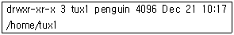
- chmod -R linus /home/tux1
- chown -R linus /home/tux1
- chuser -R linus /home/tux1
- chsh -R linus /home/tux1
(정답률: 84%)
4. 다음 중 리눅스 파일명에 대한 설명으로 틀린 것은?
- 파일명은 대·소 문자를 구분한다.
- 파일확장자를 구분한다.
- 파일명 내에 공백이나 필드분리자를 포함할 수 없다.
- 연속적인 문자, 숫자 및 특정 구두점의 단순한 열로 구성된다.
(정답률: 66%)
5. 현재 ihd.txt 허가권은 666 이다. 아래의 보기와 같이 변경하려 할 때 틀린 것은?
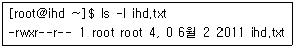
- chmod 744 ihd.txt
- chmod u=rwx,g=r,o=r ihd.txt
- chmod u+x,go-wx ihd.txt
- chmod u+rwx,go+r ihd.txt
(정답률: 55%)
6. 다음 중 파일시스템과 특징에 대한 설명으로 틀린 것은?
- minix : 가장 오래되고 기본이 되는 파일 시스템이다.
- msdos : MS-DOS의 FAT 파일 시스템과 호환을 지원하는 파일 시스템이다.
- ext2 : 저널링 기능을 포함하고 있어, 데이터 복구확률이 높다.
- nfs : 네트워크상의 많은 시스템이 서로간의 파일을 쉽게 공유하기 위해 사용되어 진다.
(정답률: 80%)
7. 파일시스템에서 특별한 종류의 디스크 블록으로 파일이름, 소유주, 권한, 시간, 디스크에서의 위치 등에 대한 정보를 담고 있는 것으로 알맞은 것은?(문제에 오류가 있는것 같습니다. 정답은 3번 체크 하시면 됩니다. 자세한 내용은 해설을 참고하세요.)
- partition table
- super block
- inode
- data block
(정답률: 87%)
8. 시스템 운영 중 새로운 디스크를 추가하려 한다. 디스크 추가 작업 시 사용하는 명령어의 순서로 알맞은 것은?
- mkfs -> fdisk -> mount
- fdisk -> mount -> mkfs
- fdisk -> mkfs -> mount
- mount -> mkfs -> fdisk
(정답률: 79%)
9. 다음 중 df 명령을 이용하여 마운트 되어있는 모든 파일시스템의 형태(fstype)를 확인 할 때 사용하는 옵션으로 알맞은 것은?
- -T
- -t
- -h
- -a
(정답률: 55%)
10. 다음 중 부팅시에 자동으로 파일시스템 점검 하도록 설정할 때 참조되는 /etc/fstab의 필드 영역으로 알맞은 것은?
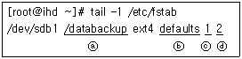
- ⓐ
- ⓑ
- ⓒ
- ⓓ
(정답률: 73%)
11. 리눅스 환경변수 리스트를 확인하기 위한 명령어로 알맞은 것은?
- export
- echo
- pwd
- sh
(정답률: 56%)
12. 리눅스 시스템에서 현재 설정 가능한 언어셋을 확인하는 명령어로 알맞은 것은?
- echo $LANG
- locale -a
- cat /etc/sysconfig/i18n
- lang
(정답률: 46%)
13. 다음 중 쉘이 자체적으로 처리하는 내부 명령에 해당하는 것으로 틀린 것은?
- alias
- set
- cd
- ls
(정답률: 63%)
14. 현재 alias cp='cp -i'가 등록되어 있다. alias를 해제하기 위한 방법으로 알맞은 것은?
- alias cp=''
- alias cp='cp -d'
- unalias cp
- unalias cp='cp –i’
(정답률: 73%)
15. Bash 쉘에서 기존 PATH를 유지하고 “/java” 경로를 추가하는 방법으로 알맞은 것은?
- export PATH=“$PATH:/java”
- export $PATH=“$PATH:/java”
- export PATH=“$PATH;/java”
- export PATH=“/java”
(정답률: 67%)
16. Bash 쉘에서 히스토리(history) 수를 500라인으로 지정하는 방법으로 알맞은 것은?
- export HISTCTL=500
- export HISTORY=500
- export HISTSIZE=500
- export HISCONTROL=500
(정답률: 84%)
17. Bash 쉘에서 사용하는 특수문자 중 이전 명령 성공여부와 상관없이 무조건 실행하는 명령어로 알맞은 것은?
- ||
- &&
- ;
- &
(정답률: 52%)
18. 다음 중 현재 사용 중인 쉘(Shell)을 변경 할 때 사용하는 명령어로 알맞은 것은?
- chage
- chsh
- chattr
- chcat
(정답률: 86%)
19. ps 명령어는 현재 존재하는 프로세스들의 실행 상태를 요약한 보고서를 만들어 준다. 다음 중 프로세스의 실제메모리 사용량을 나타내는 항목으로 알맞은 것은?
- SZ
- RSS
- %MEM
- STAT
(정답률: 64%)
20. daemon의 실행 방식 중 보통 booting시에 실행되어 메모리에 계속 상주해 있으면서 client에게 서비스를 제공 해주며, 서비스 요구가 빈번하거나 항상 요구되어지는 서비스일 경우 사용하는 방식으로 알맞은 것은?
- suspend 방식
- foreground 방식
- background 방식
- standalone 방식
(정답률: 68%)
21. 다음중 리눅스의프로세스에대한 설명으로틀린것은?
- 하나의 프로그램이 다른 프로그램을 시작시킬 때 그 새로운 프로세스를 서브 프로세스 또는 자식 프로세스라고 한다.
- 자식 프로세스는 부모 프로세스의 환경을 상속받지 않으며 새로운 환경을 생성한다.
- kernel 이후에 실행되는 최초의 프로세스는 init 프로세스이다.
- 프로세스는 프로그램이 활동하고 있는 상태를 의미한다.
(정답률: 83%)
22. ps명령을 이용하여 현재 시스템에 존재하는 httpd 프로세스들에 대한 정보만을 출력하고자 한다. ps명령과 grep명령을 연결할 때 사용되는 기호로 알맞은 것은?
- &
- !
- |
- $
(정답률: 81%)
23. 다음 중 kill 명령 사용 시 지정한 시그널이 없을 때 기본으로 보내지는 시그널로 알맞은 것은?
- TERM - 가능한 정상 종료
- QUIT - 실행종료
- KILL - 무조건 종료
- STOP - 무조건적으로 그리고 즉각적으로 정지
(정답률: 66%)
24. 다음 중 프로세스 우선순위 변경을 하는 명령으로 보기 ( 괄호 )에 알맞은 것은?
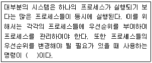
- ps
- kill
- nice
- priority
(정답률: 85%)
25. 다음 중 시스템 정보를 확인 할 때 사용하는 top 명령의 주요 옵션과 의미로 틀린 것은?
- C : 명령어의 전체경로를 보여주는 기능으로 전환한다.
- P : CPU 사용률에 따라 정렬한다.
- l : 평균 시스템 부하 및 uptime을 보여주는 기능으로 전환한다.
- s : 프로세스 가상메모리 사이즈에 따라 정렬한다.
(정답률: 48%)
26. 총무부 급여 담당자는 직원들의 월급을 정산하기 위하여 매월 25일 13시 정각에“/finance/payment.sh"라는 배치프로그램을 실행 하려한다. crontab 설정으로 알맞은 것은?
- 0 13 25 * * /finance/payment.sh
- 25 13 0 * * /finance/payment.sh
- * * 25 13 0 /finance/payment.sh
- * * 0 13 25 /finance/payment.sh
(정답률: 78%)
27. 다음 중 crontab에 스케줄 할 수 있는 작업으로 틀린 것은?
- 매일 오전 6시 20분
- 매주 월요일부터 금요일까지 오후 1시 정각
- 매주 일요일 오전 2시 22분 22초
- 매년 12월 25일 00시 30분
(정답률: 69%)
28. 다음 중 RunLevel에 대한 설명으로 틀린 것은?
- RunLevel 1 : 단일 사용자 모드
- RunLevel 3 : 다중 사용자 모드
- RunLevel 5 : GUI 환경으로의 부팅 모드
- RunLevel 6 : 시스템 종료(Power Off) 모드
(정답률: 68%)
29. vi 명령에서 “1,$s/hello/hi/g” 해당 명령 설명으로 알맞은 것은?(오류 신고가 접수된 문제입니다. 반드시 정답과 해설을 확인하시기 바랍니다.)
- 편집중인 문서 전체내용 중 hello와 hi를 문자를 검색한다.
- 최초 검색되는 hello를 hi로 1회만 치환한다.
- 편집중인 문서 전체내용 중 hello를 hi로 문자를 치환한다.
- 문서 첫번째 행에 해당하는 hello를 hi로 치환한다.
(정답률: 56%)
30. vi 명령어 중 편집 중인 파일을 저장만 수행하는 명령으로 알맞은 것은?
- :w
- :wq
- :wq!
- :q!
(정답률: 83%)
31. 다음 vi 명령모드에서 현재 행 위치 부터 3행을 복사하는 명령어로 알맞은 것은?
- 3p
- pp3
- y3
- 3yy
(정답률: 79%)
32. vi 에디터에서 편집 중인 문서의 줄 번호를 보여 주지 않게 하는 명령어로 알맞은 것은?
- :set nonu
- :!set nu
- :set notnu
- :set nu
(정답률: 73%)
33. 다음 문자열 탐색 명령어 중 설명이 틀린 것은?
- /hi - 현재 위치로부터 hi 문자열 순방향 검색
- ?hi - 현재 위치로부터 hi 문자가 있는 행줄 번호를 모두 출력
- / - 가장 최근에 검색한 문자열 다시 순방향 검색
- ? - 가장 최근에 검색한 문자열 다시 역방향 검색
(정답률: 67%)
34. 다음 중 vi 에디터 set 명령의 설명으로 틀린 것은?
- :set nu - 행 번호 보이기
- :set ts=4 - [tab] 키를 입력 하였을 때 이동하는 크기 조정
- :set notnu - 행 번호 보이지 않기
- :set all - 전체 환경설정 확인
(정답률: 68%)
35. yum 명령어 사용 설명 중 틀린 것은?
- yum install [패키지 이름] - 패키지 설치시 사용
- yum remove [패키지 이름] - 패키지 삭제시 사용
- yum -y install [패키지이름] - 패키지재설치시사용
- yum update [패키지이름] - 패키지업데이트시사용
(정답률: 83%)
36. yum 명령어 중 “Development Tools" 그룹 설치 방법이 알맞은 것은?
- yum install -group “Development Tools"
- yum groupinstall “Development Tools"
- yum install “Development Tools"
- yum -g install “Development Tools”
(정답률: 66%)
37. 다음 중 RPM 패키지 구조를 바르게 나열한 것으로 알맞은 것은?
- 아키텍처-버전-릴리즈-패키지이름.rpm
- 패키지이름-아키텍처-버전–릴리즈.rpm
- 패키지이름-릴리즈-버전-아키텍처.rpm
- 패키지이름-버전-릴리즈–아키텍처.rpm
(정답률: 73%)
38. 다음 중 rpm 명령어 옵션에 대한 설명으로 틀린 것은?
- rpm -i : 패키지를 설치한다.
- rpm -U : 패키지를 업그레이드한다.
- rpm -e : 패키지를 제거한다.
- rpm -h : 도움말을 보여준다.
(정답률: 53%)
39. tar 명령의 옵션에 대한 설명으로 틀린 것은?
- -t : 묶음파일 풀기
- -c : 새로운 묶음파일 생성
- -v : 해당 작업을 자세히 보여줌
- -f : 파일명 지정
(정답률: 64%)
40. 다음 중 hello.tar.bz2 파일을 압축 해제하기 위한 방법으로 알맞은 것은?
- tar -zxvf hello.tar.bz2
- tar -jxvf hello.tar.bz2
- tar -cxvf hello.tar.bz2
- tar -bxvf hello.tar.bz2
(정답률: 56%)
41. 다음 중 압축된 파일을 풀기위해 사용된 명령으로 틀린 것은?
- tar -zxvf hello.tar.gz
- gunzip -x hello.gz
- unzip hello.zip
- bzip2 –d hello.tar.bz2
(정답률: 46%)
42. gzip으로 압축되어 있는 텍스트 파일을 압축을 풀지 않고 내용을 볼 수 있는 명령어로 알맞은 것은?
- gcat
- zip
- cat
- zcat
(정답률: 68%)
43. 다음 중 리눅스에서 커널에 올려져 있는 모듈을 확인할 때 사용하는 명령어로 알맞은 것은?
- modulecheck
- modlist
- moduleinfo
- lsmod
(정답률: 63%)
44. 다음 중 프린터 명령의 설명 중 틀린 것은?
- lprm : 프린터큐에 있는 인쇄 작업을 취소할 때 사용하는 명령어이다.
- lpq : 프린트큐의 상태를 모니터링 할 때 사용하는 명령어이다.
- lpc : 출력 문서를 컴파일할 때 사용하는 명령어이다.
- pr : 텍스트 포맷을 출력을 위해서 변환하는 명령어이다.
(정답률: 47%)
45. 다음 중 아래의 설명에서 ( 괄호 )에 알맞은 것은?
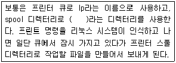
- /var/spool/queue/lp
- /var/printer/spool/lp
- /var/spool/lpd/lp
- /var/queue/printer/lp
(정답률: 48%)
46. 리눅스에서 프린터를 설치하여 사용하고자 할 때 지원하는 연결 방식으로 틀린 것은?
- Samba Printer
- PostScript
- JetDirect
- local
(정답률: 53%)
47. 다음 중 리눅스 시스템에서 하드웨어 설정에 대한 설명으로 틀린 것은?
- 네트워크상에 존재하는 프린터를 연결하여 사용할 수 있다.
- 사운드카드는 내장 스피커만 지원한다.
- 프린터 설정을 마치면 /etc/printcap에 설정값이 저장된다.
- sndconfig 프로그램을 이용하여 사운드카드를 설정할 수 있다.
(정답률: 75%)
48. 다음 중 사운드 드라이버의 4가지 유형과 단점에 대한 설명으로 틀린 것은?
- OSS/Free : 더 이상 개발되고 있지 않음.
- OSS : 소스코드가 제공되지 않음.
- ALSA : 무료로 사용할 수 없음.
- 업체 제공 : 바이너리 전용일 수 있음.
(정답률: 62%)
2과목: 리눅스 활용
49. 다음에 열거된 표준 X 애플리케이션 중 텍스트 기반의 터미널 에뮬레이터로 알맞은 것은?
- xterm
- xclock
- xdm
- xman
(정답률: 69%)
50. 다음에 나열된 X 윈도우 관련 라이브러리 중 나머지 3개와 성격이 틀린 것은?
- Xaw
- Motif
- Xlib
- XView
(정답률: 51%)
51. 다음 중 리눅스 콘솔 모드에서 X 윈도우를 실행시킬 때 사용하는 명령어로 알맞은 것은?
- Xconfigurator
- startx
- XF86Setup
- xstart
(정답률: 69%)
52. 다음 중 ( 괄호 )안에 들어갈 내용으로 알맞은 것은?
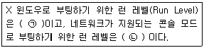
- (ㄱ) 1 - (ㄴ) 5
- (ㄱ) 1 - (ㄴ) 3
- (ㄱ) 5 - (ㄴ) 1
- (ㄱ) 5 - (ㄴ) 3
(정답률: 62%)
53. 다음 중 리눅스의 대표적인 MP3 플레이어 프로그램으로 알맞은 것은?
- XMMS
- Real Player
- MTV
- GIMP
(정답률: 60%)
54. 다음 중 ( 괄호 )안에 들어갈 내용으로 알맞은 것은?
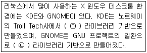
- (ㄱ) XFree86 - (ㄴ) Xorg
- (ㄱ) Xorg - (ㄴ) XFree86
- (ㄱ) GTK+ - (ㄴ) Qt
- (ㄱ) Qt - (ㄴ) GTK+
(정답률: 68%)
55. 다음 중 윈도우 매니저의 종류로 틀린 것은?
- twm
- windowmaker
- AfterStep
- xev
(정답률: 49%)
56. 다음 중 윈도우 매니저 관련 설명으로 틀린 것은?
- 윈도우 매니저란 X 윈도우 시스템이 형태를 갖추어 주는 프로그램이다.
- 윈도우 매니저는 파일 매니저, 도움말 시스템, 제어판, 바탕화면 등을 포함한 개념이다.
- 윈도우 매니저는 윈도우의 크기 변화, 아이콘화, 이동 등을 위한 인터페이스를 제공한다.
- 윈도우 매니저는 윈도우 테두리의 외양을 다루는 기능을 제공한다.
(정답률: 48%)
57. 다음 설명으로 알맞은 LAN 토폴로지로 알맞은 것은?
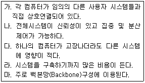
- 스타 토폴로지
- 버스 토폴로지
- 링 토폴로지
- 망(Mesh) 토폴로지
(정답률: 73%)
58. 네트워크 장치에 100BASE-T라고 적혀 있다. 이에 대한 설명으로 틀린 것은?
- Fast 이더넷이라 부르며 속도는 100Mbps이다.
- BASE는 베이스밴드(Baseband)를 뜻한다.
- 전송매체로 광케이블을 사용한다.
- 전송거리는 100m 이다.
(정답률: 57%)
59. 다음 중 LAN의 접속규격과 처리에 대한 표준을 제정하는 기관으로 알맞은 것은?
- ISO
- ANSI
- EIA
- IEEE
(정답률: 67%)
60. 다음에서 설명하는 내용으로 알맞은 것은?
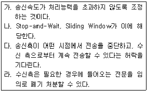
- 에러제어(Error Control)
- 순서제어(Sequencing/Ordering)
- 흐름제어(Flow Control)
- 우선순위와 단절(Priority and Preemption)
(정답률: 74%)
61. OSI 7계층을 기준으로 가장 많은 계층을 지원하는 통신 장비 순서로 알맞은 것은?
- 라우터 > 브리지 > 리피터
- 라우터 > 리피터 > 브리지
- 리피터 > 브리지 > 라우터
- 브리지 > 리피터 > 라우터
(정답률: 65%)
62. 다음 설명하는 OSI 계층으로 알맞은 것은?
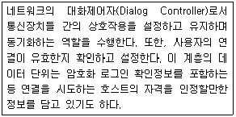
- 전송계층
- 세션계층
- 표현계층
- 응용계층
(정답률: 56%)
63. 다음 중 OSI의 네트워크 계층과 가장 거리가 먼 프로토콜로 알맞은 것은?
- IP
- TCP
- ICMP
- ARP
(정답률: 54%)
64. 아래의 설명에 해당하는 프로토콜로 알맞은 것은?
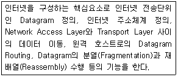
- IP
- TCP
- UDP
- ARP
(정답률: 61%)
65. 다음은 특정 파일의 일부이다. ( 괄호 )안에 들어갈 파일명으로 알맞은 것은?
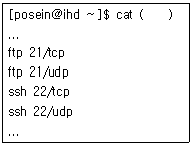
- /etc/protocol
- /etc/protocols
- /etc/services
- /etc/service
(정답률: 53%)
66. 다음 중 IP주소(Version 4)에 대한 설명으로 틀린 것은?
- IP주소는 8비트 숫자 4개인 32비트로 구성된다.
- C클래스는 최상위 3비트가 100이다.
- B클래스의 기본 서브넷 마스크값은 255.255.0.0이다.
- 주소는 네트워크 식별자와 호스트 식별자로 구성된다.
(정답률: 76%)
67. 다음 ( 괄호 )안에 들어갈 우리나라의 2단계 공공 도메인으로 알맞은 것은?
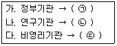
- (ㄱ) go - (ㄴ) or - (ㄷ) re
- (ㄱ) go - (ㄴ) re - (ㄷ) or
- (ㄱ) or - (ㄴ) re - (ㄷ) go
- (ㄱ) or - (ㄴ) go - (ㄷ) re
(정답률: 71%)
68. 다음에서 설명하는 웹브라우저로 알맞은 것은?
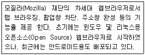
- Firefox
- Opera
- Safari
- Chrome
(정답률: 69%)
69. 다음 FTP에 관련된 설명 중 틀린 것은?
- FTP는 인터넷에서 파일 전송에 대한 규약을 뜻한다.
- 익명의 FTP(Anonymous FTP)서버는 서버 계정이 있는 사용자만 이용할 수 있다.
- FTP 서버에 접속 후 get 명령으로 다운로드 할 수 있다.
- FTP 서버에 접속 후 hash 명령을 내리면 송수신시 ‘#’ 마크로 표시해준다.
(정답률: 72%)
70. 다음 중 SSH에 대한 설명으로 틀린 것은?
- 텔넷(telnet)과 FTP 서비스를 대체할 수 있다.
- 원격복사 기능도 사용할 수 있다.
- 텔넷(telnet)에 비해 보안이 취약하다.
- SSH 서버의 포트번호는 22번이다.
(정답률: 76%)
71. 다음 중 전자우편(E-mail)과 관련있는 프로토콜의 조합으로 가장 알맞은 것은?
- SMTP, SLIP
- SMTP, PPP
- SLIP, PPP
- SMTP, POP3
(정답률: 79%)
72. 다음은 게이트웨이 주소를 설정하는 내용이다. ( 괄호 )안에 들어갈 내용으로 알맞은 것은?
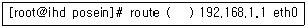
- add net
- add -net
- add default gw
- add default –gw
(정답률: 53%)
73. 다음은 특정 파일의 일부이다. ( 괄호 )안에 들어갈 파일명으로 알맞은 것은?
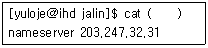
- /etc/networks
- /etc/host.conf
- /etc/resolv.conf
- /etc/hosts
(정답률: 66%)
74. 다음 중 네트워크 인터페이스의 맥 주소(Mac Address)를 확인할 때 사용하는 명령어로 알맞은 것은?
- ifconfig
- ipconfig
- route
- ping
(정답률: 68%)
75. 다음 중 네트워크 인터페이스에 대한 설명으로 틀린 것은?
- lo는 loopback interface를 뜻하고, IP주소는 127.0.0.1이 할당된다.
- 첫 번째 이더넷 장치는 eth1로 할당된다.
- xen, kvm과 같은 가상화 프로그램을 사용할 경우 virbr0이 추가로 할당된다.
- 모뎀을 사용할 경우 ppp0으로 할당된다.
(정답률: 71%)
76. 다음 ( 괄호 )안에 들어갈 네트워크 관련 명령어로 알맞은 것은?
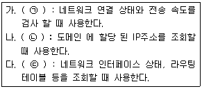
- (ㄱ) ping - (ㄴ) netstat - (ㄷ) nslookup
- (ㄱ) netstat - (ㄴ) ping - (ㄷ) nslookup
- (ㄱ) netstat - (ㄴ) nslookup - (ㄷ) ping
- (ㄱ) ping - (ㄴ) nslookup - (ㄷ) netstat
(정답률: 69%)
77. 다음 중 리눅스 클러스터링에 대한 설명으로 틀린 것은?
- 웹 서버는 Beowulf 클러스터보다는 HA(High Availability) 클러스터가 사용된다.
- Beowulf 클러스터는 MPI 병렬 프로그램이 필요하다.
- HA(High Availability) 클러스터는 부하분산(Load Balancing)을 고려해야 한다.
- Beowulf 클러스터에서는 연산 능력보다는 결함 허용(Fault-Tolerant)이 더욱 중요하다.
(정답률: 52%)
78. 다음에서 설명하는 것으로 알맞은 것은?
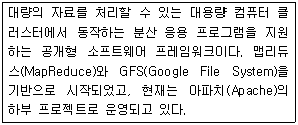
- 글러스터FS(GlusterFS)
- 하둡(Hadoop)
- 오픈스택(OpenStack)
- 클라우드스택(Cloudstack)
(정답률: 55%)
79. 다음에서 설명하는 것으로 알맞은 것은?
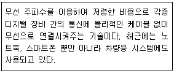
- BLUETOOTH
- 안드로이드
- CATV
- KVM
(정답률: 80%)
80. 다음에 설명하는 클라우드 컴퓨팅 서비스로 알맞은 것은?
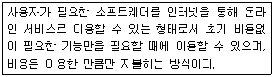
- IaaS(Infrastructure as a Service)
- PaaS(Platform as a Service)
- SaaS(Software as a Service)
- DaaS(Database as a Service)
(정답률: 62%)
배치 파일은 b로 표시되며, 일련의 명령어를 실행하는 스크립트 파일입니다. 주로 Windows 운영체제에서 사용되며, 파일 확장자는 .bat이나 .cmd입니다. 배치 파일은 여러 개의 명령어를 한 번에 실행할 수 있어서 자동화 작업에 유용하게 사용됩니다.